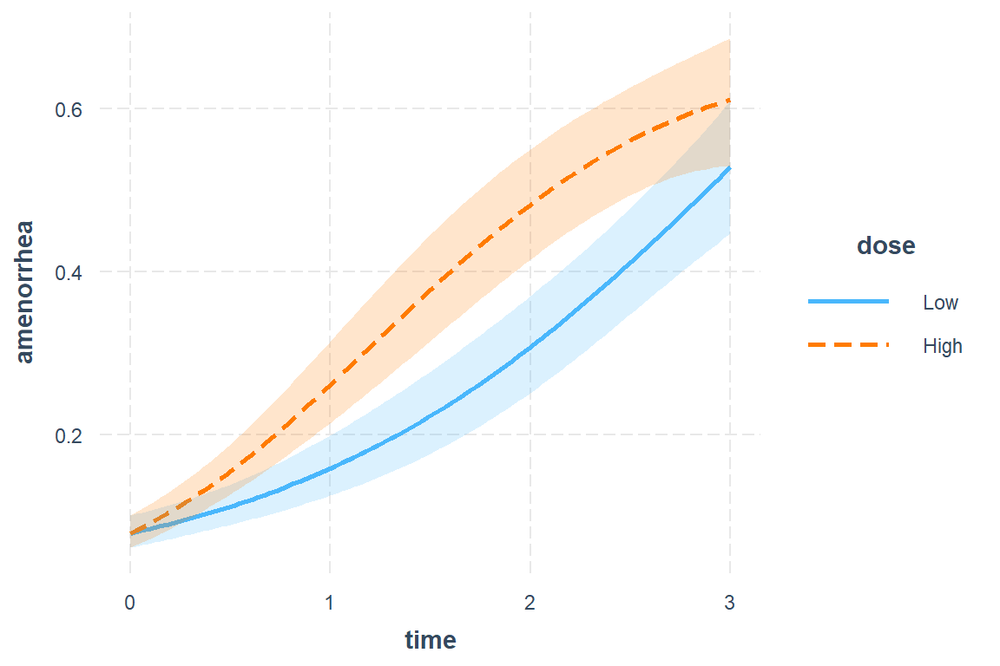
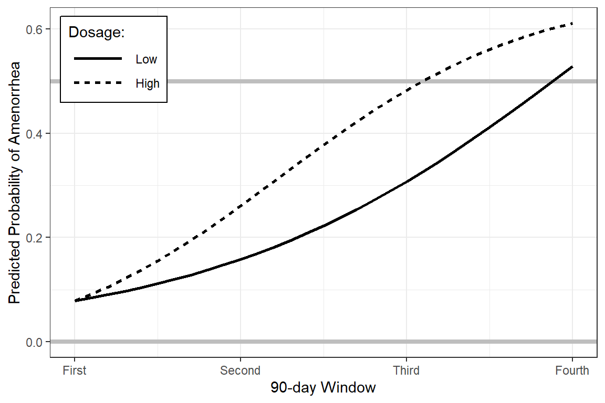
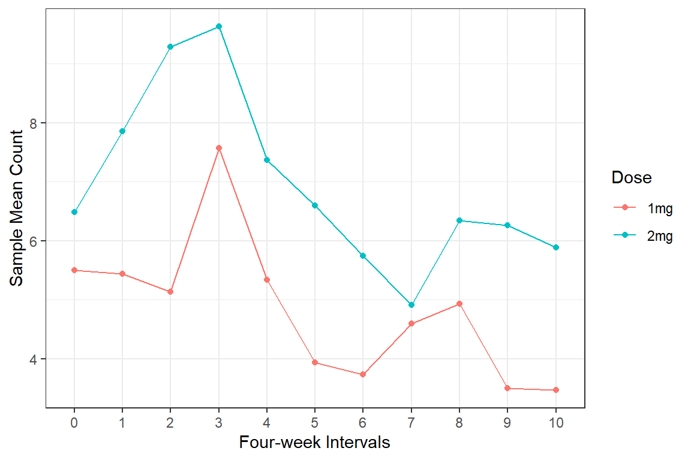
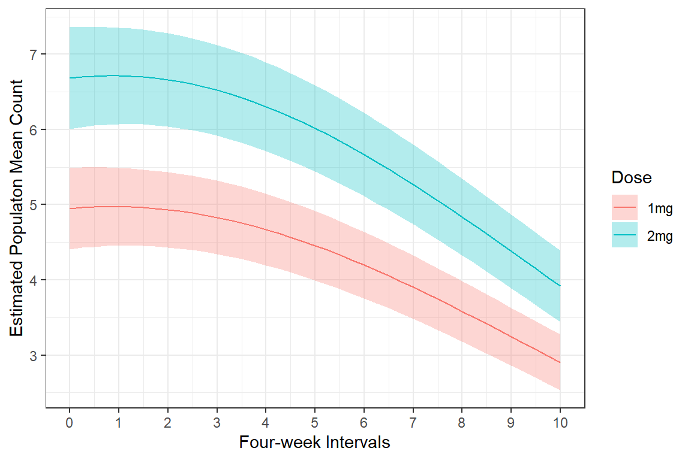
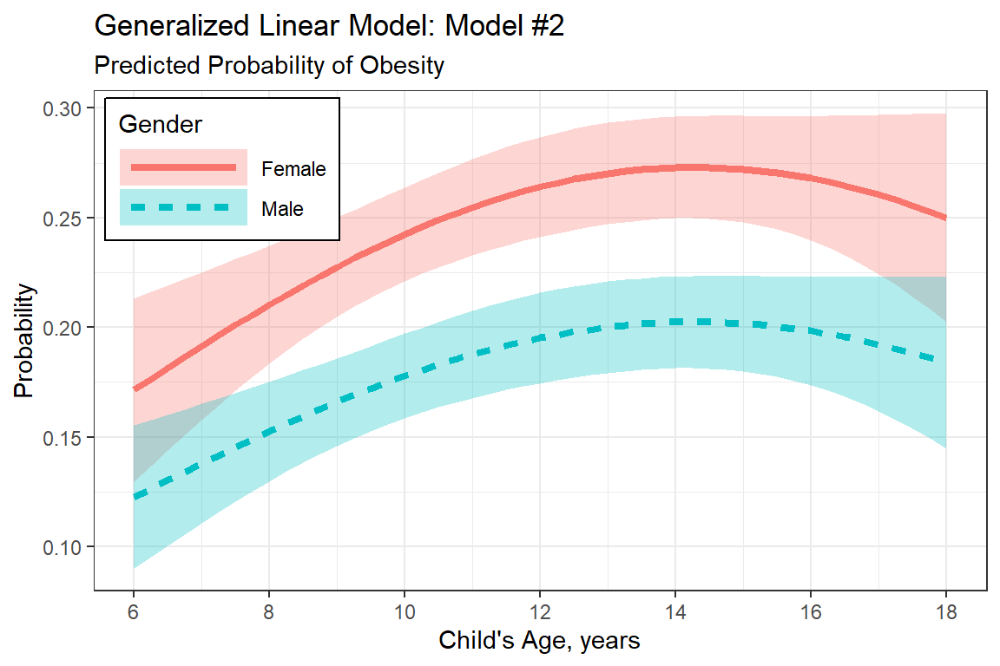
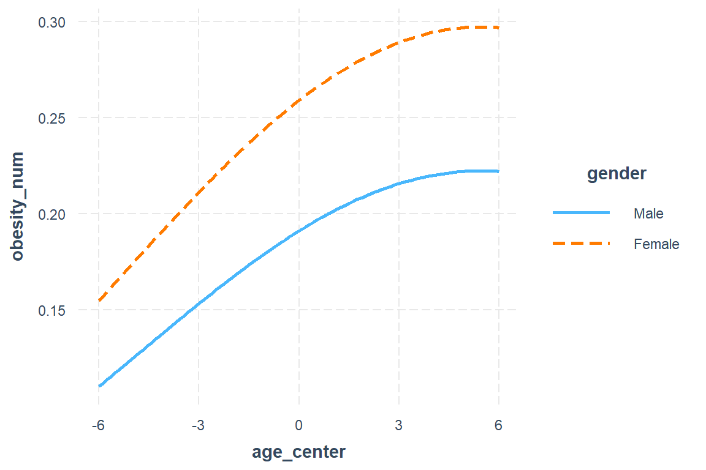
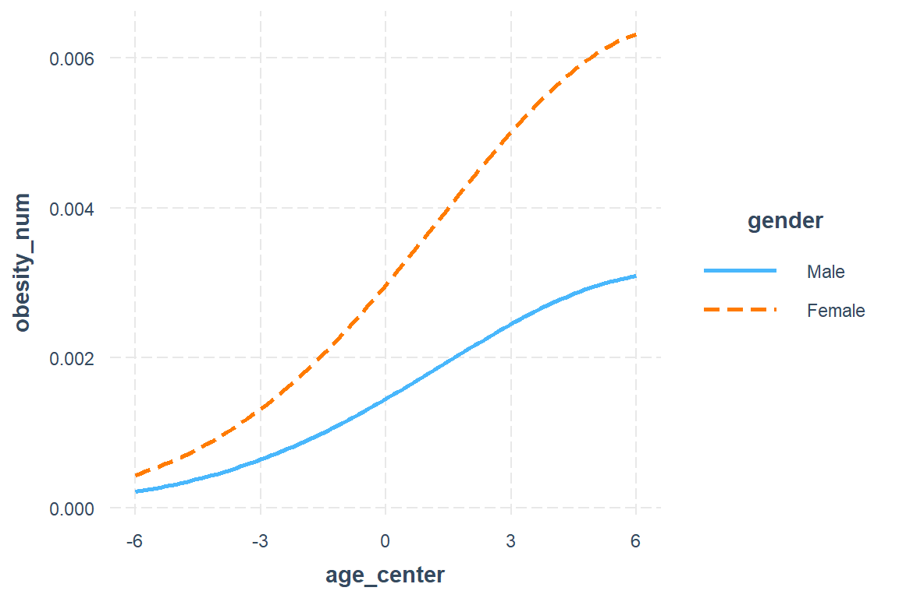
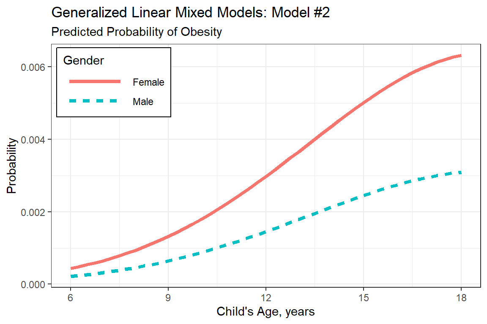
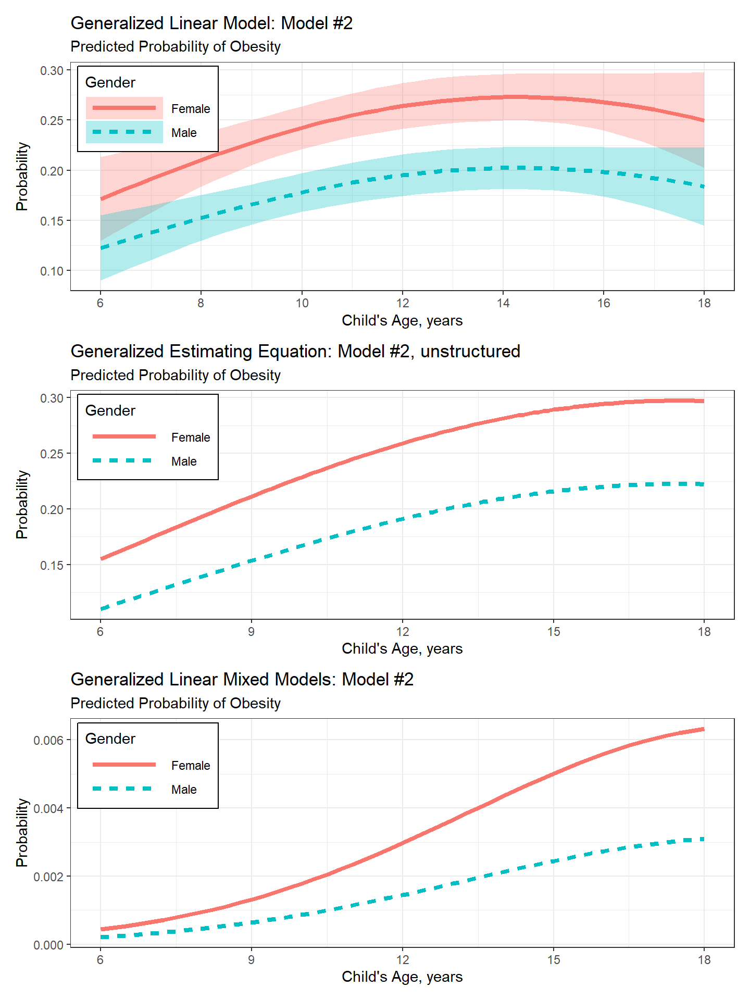

19 GLMM, Binary Outcome: Muscatine Obesity
19.1 Packages
19.1.1 CRAN
library(tidyverse) # all things tidy
library(pander) # nice looking genderal tabulations
library(furniture) # nice table1() descriptives
library(texreg) # Convert Regression Output to LaTeX or HTML Tables
library(psych) # contains some useful functions, like headTail
library(lme4) # Linear, generalized linear, & nonlinear mixed models
library(gee) # Generalized Estimating Equations
library(effects) # Plotting estimated marginal means
library(performance)
library(interactions)
library(patchwork) # combining graphics19.2 Data Prep
Data on Obesity from the Muscatine Coronary Risk Factor Study.
Source:
Table 10 (page 96) in Woolson and Clarke (1984). With permission of Blackwell Publishing.
Reference:
Woolson, R.F. and Clarke, W.R. (1984). Analysis of categorical incompletel longitudinal data. Journal of the Royal Statistical Society, Series A, 147, 87-99.
Description:
The Muscatine Coronary Risk Factor Study (MCRFS) was a longitudinal study of coronary risk factors in school children in Muscatine, Iowa (Woolson and Clarke 1984; Ekholm and Skinner 1998). Five cohorts of children were measured for height and weight in 1977, 1979, and 1981. Relative weight was calculated as the ratio of a child’s observed weight to the median weight for their age-sex-height group. Children with a relative weight greater than 110% of the median weight for their respective stratum were classified as obese. The analysis of this study involves binary data (1 = obese, 0 = not obese) collected at successive time points.
This data was also using in an article title “Missing data methods in longitudinal studies: a review” (https://www.ncbi.nlm.nih.gov/pmc/articles/PMC3016756/).
Variable List:
Indicators
idChild’s unique identification numberoccasOccasion number: 1, 2, 3
Outcome or dependent variable
obesityObesity Status, 0 = no, 1 = yes
Main predictor or independent variable of interest
gender0 = Male, 1 = FemalebaseageBaseline Age, mid-point of age-cohortcurrageCurrent Age, mid-point of age-cohort
19.2.1 Import
data_raw <- read.table("https://raw.githubusercontent.com/CEHS-research/data/master/MLM/Muscatine.txt", header=TRUE)'data.frame': 14568 obs. of 6 variables:
$ id : int 1 1 1 2 2 2 3 3 3 4 ...
$ gender : int 0 0 0 0 0 0 0 0 0 0 ...
$ baseage: int 6 6 6 6 6 6 6 6 6 6 ...
$ currage: int 6 8 10 6 8 10 6 8 10 6 ...
$ occas : int 1 2 3 1 2 3 1 2 3 1 ...
$ obesity: chr "1" "1" "1" "1" ... id gender baseage currage occas obesity
1 1 0 6 6 1 1
2 1 0 6 8 2 1
3 1 0 6 10 3 1
4 2 0 6 6 1 1
5 2 0 6 8 2 1
6 2 0 6 10 3 1
7 3 0 6 6 1 1
8 3 0 6 8 2 1
9 3 0 6 10 3 1
10 4 0 6 6 1 1
... ... ... ... ... ... <NA>
14565 4855 1 14 18 3 0
14566 4856 1 14 14 1 .
14567 4856 1 14 16 2 .
14568 4856 1 14 18 3 019.2.2 Restrict to 350ID’s of children with complete data for Class Demonstration
Dealing with missing-ness and its implications are beyond the score of this class. Instead we are going to restrict our class analysis to a subset of 350 children who have complete data
I am using the
set.seed()function so that I can replicate the restults later.
complete_ids <- data_raw %>%
dplyr::filter(obesity %in% c("0", "1")) %>%
dplyr::group_by(id) %>%
dplyr::summarise(n = n()) %>%
dplyr::filter(n == 3) %>%
dplyr::pull(id)
set.seed(8892) # needed?
use_ids <- complete_ids %>% sample(350)
head(use_ids)[1] 3574 805 3458 3537 679 65519.2.3 Long Format
data_long <- data_raw %>%
dplyr::filter(id %in% use_ids) %>%
mutate(id = id %>% factor) %>%
mutate(gender = gender %>% factor(levels = 0:1,
labels = c("Male", "Female"))) %>%
mutate(age_base = baseage %>% factor) %>%
mutate(age_curr = currage %>% factor) %>%
mutate(occation = occas %>% factor) %>%
mutate(obesity = obesity %>% factor(levels = 0:1,
labels = c("No", "Yes"))) %>%
select(id, gender, age_base, age_curr, occation, obesity)'data.frame': 1050 obs. of 6 variables:
$ id : Factor w/ 350 levels "1","5","10","16",..: 1 1 1 2 2 2 3 3 3 4 ...
$ gender : Factor w/ 2 levels "Male","Female": 1 1 1 1 1 1 1 1 1 1 ...
$ age_base: Factor w/ 5 levels "6","8","10","12",..: 1 1 1 1 1 1 2 2 2 2 ...
$ age_curr: Factor w/ 7 levels "6","8","10","12",..: 1 2 3 1 2 3 2 3 4 2 ...
$ occation: Factor w/ 3 levels "1","2","3": 1 2 3 1 2 3 1 2 3 1 ...
$ obesity : Factor w/ 2 levels "No","Yes": 2 2 2 2 2 2 2 2 2 2 ... id gender age_base age_curr occation obesity
1 1 Male 6 6 1 Yes
2 1 Male 6 8 2 Yes
3 1 Male 6 10 3 Yes
4 5 Male 6 6 1 Yes
5 5 Male 6 8 2 Yes
6 5 Male 6 10 3 Yes
7 10 Male 8 8 1 Yes
8 10 Male 8 10 2 Yes
9 10 Male 8 12 3 Yes
10 16 Male 8 8 1 Yes
... <NA> <NA> <NA> <NA> <NA> <NA>
1047 3582 Female 14 18 3 No
1048 3584 Female 14 14 1 No
1049 3584 Female 14 16 2 No
1050 3584 Female 14 18 3 No19.2.4 Wide Format
data_wide <- data_long %>%
tidyr::pivot_wider(names_from = occation,
names_sep = "_",
values_from = c(obesity, age_curr)) %>%
mutate_if(is.character, factor)%>%
group_by(id) %>%
mutate(num_miss = sum(is.na(c(obesity_1, obesity_2, obesity_3)))) %>%
ungroup() %>%
mutate(num_miss = as.factor(num_miss))tibble [350 x 10] (S3: tbl_df/tbl/data.frame)
$ id : Factor w/ 350 levels "1","5","10","16",..: 1 2 3 4 5 6 7 8 9 10 ...
$ gender : Factor w/ 2 levels "Male","Female": 1 1 1 1 1 1 1 1 1 1 ...
$ age_base : Factor w/ 5 levels "6","8","10","12",..: 1 1 2 2 2 3 3 3 4 4 ...
$ obesity_1 : Factor w/ 2 levels "No","Yes": 2 2 2 2 2 2 2 2 2 2 ...
$ obesity_2 : Factor w/ 2 levels "No","Yes": 2 2 2 2 2 2 2 2 2 2 ...
$ obesity_3 : Factor w/ 2 levels "No","Yes": 2 2 2 2 2 2 2 2 2 2 ...
$ age_curr_1: Factor w/ 7 levels "6","8","10","12",..: 1 1 2 2 2 3 3 3 4 4 ...
$ age_curr_2: Factor w/ 7 levels "6","8","10","12",..: 2 2 3 3 3 4 4 4 5 5 ...
$ age_curr_3: Factor w/ 7 levels "6","8","10","12",..: 3 3 4 4 4 5 5 5 6 6 ...
$ num_miss : Factor w/ 1 level "0": 1 1 1 1 1 1 1 1 1 1 ... id gender age_base obesity_1 obesity_2 obesity_3 age_curr_1 age_curr_2
1 1 Male 6 Yes Yes Yes 6 8
2 5 Male 6 Yes Yes Yes 6 8
3 10 Male 8 Yes Yes Yes 8 10
4 16 Male 8 Yes Yes Yes 8 10
5 21 Male 8 Yes Yes Yes 8 10
6 30 Male 10 Yes Yes Yes 10 12
7 44 Male 10 Yes Yes Yes 10 12
8 50 Male 10 Yes Yes Yes 10 12
9 60 Male 12 Yes Yes Yes 12 14
10 61 Male 12 Yes Yes Yes 12 14
11 <NA> <NA> <NA> <NA> <NA> <NA> <NA> <NA>
12 3580 Female 14 No No No 14 16
13 3581 Female 14 No No No 14 16
14 3582 Female 14 No No No 14 16
15 3584 Female 14 No No No 14 16
age_curr_3 num_miss
1 10 0
2 10 0
3 12 0
4 12 0
5 12 0
6 14 0
7 14 0
8 14 0
9 16 0
10 16 0
11 <NA> <NA>
12 18 0
13 18 0
14 18 0
15 18 019.3 Exploratory Data Analysis
19.3.1 Summary Statistics
19.3.1.1 Demographics and Baseline
data_wide %>%
dplyr::group_by(gender) %>%
furniture::table1("Baseline Age" = age_base,
"Baseline Obesity" = obesity_1,
total = TRUE,
test = TRUE,
na.rm = FALSE,
output = "markdown")| Total | Male | Female | P-Value | |
|---|---|---|---|---|
| n = 350 | n = 166 | n = 184 | ||
| Baseline Age | 0.759 | |||
| 6 | 42 (12%) | 17 (10.2%) | 25 (13.6%) | |
| 8 | 91 (26%) | 47 (28.3%) | 44 (23.9%) | |
| 10 | 92 (26.3%) | 41 (24.7%) | 51 (27.7%) | |
| 12 | 67 (19.1%) | 33 (19.9%) | 34 (18.5%) | |
| 14 | 58 (16.6%) | 28 (16.9%) | 30 (16.3%) | |
| NA | 0 (0%) | 0 (0%) | 0 (0%) | |
| Baseline Obesity | 0.608 | |||
| No | 286 (81.7%) | 138 (83.1%) | 148 (80.4%) | |
| Yes | 64 (18.3%) | 28 (16.9%) | 36 (19.6%) | |
| NA | 0 (0%) | 0 (0%) | 0 (0%) |
19.3.1.2 Status over Time
data_summary <- data_long %>%
dplyr::group_by(gender, age_curr) %>%
dplyr::mutate(obesityN = case_when(obesity == "Yes" ~ 1,
obesity == "No" ~ 0)) %>%
dplyr::filter(complete.cases(gender, age_curr, obesityN)) %>%
dplyr::summarise(n = n(),
prob_est = mean(obesityN),
prob_SD = sd(obesityN),
prob_SE = prob_SD/sqrt(n))
data_summary# A tibble: 14 x 6
# Groups: gender [2]
gender age_curr n prob_est prob_SD prob_SE
<fct> <fct> <int> <dbl> <dbl> <dbl>
1 Male 6 17 0.118 0.332 0.0805
2 Male 8 64 0.172 0.380 0.0475
3 Male 10 105 0.143 0.352 0.0343
4 Male 12 121 0.198 0.400 0.0364
5 Male 14 102 0.225 0.420 0.0416
6 Male 16 61 0.213 0.413 0.0529
7 Male 18 28 0.143 0.356 0.0673
8 Female 6 25 0.16 0.374 0.0748
9 Female 8 69 0.203 0.405 0.0488
10 Female 10 120 0.275 0.448 0.0409
11 Female 12 129 0.256 0.438 0.0386
12 Female 14 115 0.243 0.431 0.0402
13 Female 16 64 0.281 0.453 0.0566
14 Female 18 30 0.267 0.450 0.082119.3.2 Visualize
19.3.2.1 By cohort and gender
data_long %>%
dplyr::group_by(gender, age_base, age_curr) %>%
dplyr::mutate(obesityN = case_when(obesity == "Yes" ~ 1,
obesity == "No" ~ 0)) %>%
dplyr::filter(complete.cases(gender, age_curr, obesityN)) %>%
dplyr::summarise(n = n(),
prob_est = mean(obesityN),
prob_SD = sd(obesityN),
prob_SE = prob_SD/sqrt(n)) %>%
ggplot(aes(x = age_curr,
y = prob_est,
group = age_base,
color = age_base)) +
geom_point() +
geom_line() +
theme_bw() +
labs(x = "Child's Age, years",
y = "Proportion Obese") +
facet_grid(. ~ gender)
19.3.2.2 BY only gender
data_summary %>%
ggplot(aes(x = age_curr,
y = prob_est,
group = gender)) +
geom_ribbon(aes(ymin = prob_est - prob_SE,
ymax = prob_est + prob_SE,
fill = gender),
alpha = .3) +
geom_point(aes(color = gender,
shape = gender)) +
geom_line(aes(linetype = gender,
color = gender)) +
theme_bw() +
scale_color_manual(values = c("dodger blue", "hot pink")) +
scale_fill_manual(values = c("dodger blue", "hot pink")) +
labs(x = "Child's Age, years",
y = "Proportion Obese")
Smooth out the trends
data_summary %>%
ggplot(aes(x = age_curr,
y = prob_est,
group = gender,
color = gender)) +
geom_smooth(method = "lm",
formula = y ~ poly(x, 2),
se = FALSE) +
theme_bw() +
scale_color_manual(values = c("dodger blue", "hot pink")) +
scale_fill_manual(values = c("dodger blue", "hot pink")) +
labs(x = "Child's Age, years",
y = "Proportion Obese")
19.4 Analysis Goal
Does risk of obesity increase with age and are patterns of change similar for both sexes?
There are 5 age cohorts that were measured each for 3 years, baseage and currage are age midpoints of those cohort groups. Which to include, current age or occasion? Assume no cohort effects. If you do think this is an issue, include baseline age (age_base) and current age minus baseline age (time) in model.
data_long %>%
group_by(gender, age_base, occation) %>%
summarise(n = n(),
count = sum(obesity == "Yes"),
prop = mean(obesity == "Yes"),
se = sd(obesity == "Yes")/sqrt(n)) %>%
mutate(time = (occation %>% as.numeric) * 2 - 2) %>%
ggplot(aes(x = time,
y = prop,
fill = gender)) +
geom_ribbon(aes(ymin = prop - se,
ymax = prop + se),
alpha = 0.2) +
geom_point(aes(color = gender)) +
geom_line(aes(color = gender)) +
theme_bw() +
facet_wrap(~ age_base, labeller = label_both) +
labs(title = "Observed Obesity Rates, by Gender within Cohort",
subtitle = "Subset of 350 children with complete data",
x = "Time, years from 1977",
y = "Proportion of Children Characterized as Obese") +
scale_fill_manual(values = c("dodgerblue3", "red")) +
scale_color_manual(values = c("dodgerblue3", "red")) +
scale_x_continuous(breaks = seq(from = 0, to = 4, by = 2)) +
theme(legend.position = c(1, 0),
legend.justification = c(1, 0),
legend.background = element_rect(color = "black"))
data_long %>%
group_by(gender, age_curr) %>%
summarise(n = n(),
count = sum(obesity == "Yes"),
prop = mean(obesity == "Yes"),
se = sd(obesity == "Yes")/sqrt(n)) %>%
ggplot(aes(x = age_curr %>% as.character %>% as.numeric,
y = prop,
group = gender,
fill = gender)) +
geom_ribbon(aes(ymin = prop - se,
ymax = prop + se),
alpha = 0.2) +
geom_point(aes(color = gender)) +
geom_line(aes(color = gender)) +
theme_bw() +
geom_vline(xintercept = 12,
linetype = "dashed",
size = 1,
color = "navyblue") +
labs(title = "Observed Obesity Rates, by Gender (collapsing cohorts)",
subtitle = "Subset of 350 children with complete data",
x = "Age of Child, years",
y = "Proportion of Children Characterized as Obese") +
scale_fill_manual(values = c("dodgerblue3", "red")) +
scale_color_manual(values = c("dodgerblue3", "red")) +
scale_x_continuous(breaks = seq(from = 6, to = 18, by = 2)) +
theme(legend.position = c(0, 1),
legend.justification = c(-0.05, 1.05),
legend.background = element_rect(color = "black"))
19.4.1 Center time at twelve years old
data_long <- data_long %>%
dplyr::mutate(age_center = age_curr %>% as.character %>% as.numeric -12) %>%
dplyr::mutate(obesity_num = obesity %>% as.numeric - 1)
psych::headTail(data_long) id gender age_base age_curr occation obesity age_center obesity_num
1 1 Male 6 6 1 Yes -6 1
2 1 Male 6 8 2 Yes -4 1
3 1 Male 6 10 3 Yes -2 1
4 5 Male 6 6 1 Yes -6 1
... <NA> <NA> <NA> <NA> <NA> <NA> ... ...
1047 3582 Female 14 18 3 No 6 0
1048 3584 Female 14 14 1 No 2 0
1049 3584 Female 14 16 2 No 4 0
1050 3584 Female 14 18 3 No 6 019.5 GLM Analysis
19.5.1 Standard logistic regression
fit_glm_1 <- glm(obesity_num ~ gender*age_center + gender*I(age_center^2),
data = data_long,
family = binomial(link = "logit"))
fit_glm_2 <- glm(obesity_num ~ gender + age_center + I(age_center^2),
data = data_long,
family = binomial(link = "logit"))texreg::knitreg(list(extract_glm_exp(fit_glm_1),
extract_glm_exp(fit_glm_2)),
custom.model.names = c("Interaction",
"Main Effects"),
caption = "GLM: Parameter EStimates",
single.row = TRUE,
ci.test = 1)| Interaction | Main Effects | |
|---|---|---|
| (Intercept) | 0.25 [0.18; 0.33]* | 0.24 [0.19; 0.31]* |
| genderFemale | 1.43 [0.97; 2.12] | 1.48 [1.10; 2.00]* |
| age_center | 1.05 [0.97; 1.14] | 1.04 [0.99; 1.10] |
| age_center^2 | 0.99 [0.96; 1.01] | 0.99 [0.98; 1.01] |
| genderFemale:age_center | 0.99 [0.89; 1.09] | |
| genderFemale:age_center^2 | 1.00 [0.97; 1.04] | |
| * Null hypothesis value outside the confidence interval. | ||
plot_pred_glm <- Effect(c("gender", "age_center"),
fit_glm_2,
xlevels = list(age_center = seq(from = -6, to = 6, by = 0.25))) %>%
data.frame %>%
mutate(age = age_center + 12) %>%
ggplot(aes(x = age,
y = fit,
group = gender,
linetype = gender,
fill = gender)) +
geom_ribbon(aes(ymin = fit - se,
ymax = fit + se),
alpha = .3) +
geom_line(aes(color = gender),
size = 1.5) +
theme_bw() +
labs(title = "Generalized Linear Model: Model #2",
subtitle = "Predicted Probability of Obesity",
x = "Child's Age, years",
y = "Probability",
linetype = "Gender",
fill = "Gender",
color = "Gender") +
theme(legend.position = c(0, 1),
legend.justification = c(-0.05, 1.05),
legend.background = element_rect(color = "black"),
legend.key.width = unit(2, "cm")) +
scale_x_continuous(breaks = seq(from = 6, to = 18, by = 2))
plot_pred_glm 
19.6 GEE Analysis
ALWAYS: fix the scale parameter to 1 with binomial data!!!
fit_gee_1in <- gee::gee(obesity_num ~ gender*age_center + gender*I(age_center^2),
id = id,
data = data_long,
family = binomial(link = "logit"),
corstr = 'independence',
scale.fix = TRUE,
scale.value = 1) (Intercept) genderFemale
-1.398469 0.361111
age_center I(age_center^2)
0.048638 -0.011231
genderFemale:age_center genderFemale:I(age_center^2)
-0.014399 0.004094 fit_gee_1ex <- gee::gee(obesity_num ~ gender*age_center + gender*I(age_center^2),
id = id,
data = data_long,
family = binomial(link = "logit"),
corstr = 'exchangeable',
scale.fix = TRUE,
scale.value = 1) (Intercept) genderFemale
-1.398469 0.361111
age_center I(age_center^2)
0.048638 -0.011231
genderFemale:age_center genderFemale:I(age_center^2)
-0.014399 0.004094 fit_gee_1un <- gee::gee(obesity_num ~ gender*age_center + gender*I(age_center^2),
id = id,
data = data_long,
family = binomial(link = "logit"),
corstr = 'unstructured',
scale.fix = TRUE,
scale.value = 1) (Intercept) genderFemale
-1.398469 0.361111
age_center I(age_center^2)
0.048638 -0.011231
genderFemale:age_center genderFemale:I(age_center^2)
-0.014399 0.004094 texreg::knitreg(list(extract_gee_exp(fit_gee_1in),
extract_gee_exp(fit_gee_1ex),
extract_gee_exp(fit_gee_1un)),
custom.model.names = c("Independent",
"Exchangable",
"Unstructured"),
caption = "Gee Model Parameters: With Interactions",
single.row = TRUE,
ci.test = 1)| Independent | Exchangable | Unstructured | |
|---|---|---|---|
| (Intercept) | 0.25 [0.17; 0.35]* | 0.24 [0.17; 0.35]* | 0.25 [0.17; 0.35]* |
| genderFemale | 1.43 [0.87; 2.35] | 1.40 [0.87; 2.24] | 1.39 [0.86; 2.23] |
| age_center | 1.05 [0.94; 1.17] | 1.07 [0.97; 1.17] | 1.06 [0.97; 1.16] |
| age_center^2 | 0.99 [0.96; 1.01] | 0.99 [0.97; 1.01] | 0.99 [0.97; 1.01] |
| genderFemale:age_center | 0.99 [0.86; 1.13] | 1.02 [0.91; 1.14] | 1.02 [0.91; 1.14] |
| genderFemale:age_center^2 | 1.00 [0.97; 1.04] | 1.01 [0.98; 1.03] | 1.01 [0.98; 1.03] |
| Dispersion | 1.00 | 1.00 | 1.00 |
| * Null hypothesis value outside the confidence interval. | |||
19.6.1 Drop the interaction with gender.
fit_gee_2in <- gee::gee(obesity_num ~ gender + age_center + I(age_center^2),
id = id,
data = data_long,
family = binomial(link = "logit"),
corstr = 'independence',
scale.fix = TRUE,
scale.value = 1) (Intercept) genderFemale age_center I(age_center^2)
-1.416998 0.392184 0.039733 -0.008682 fit_gee_2ex <- gee::gee(obesity_num ~ gender + age_center + I(age_center^2),
id = id,
data = data_long,
family = binomial(link = "logit"),
corstr = 'exchangeable',
scale.fix = TRUE,
scale.value = 1) (Intercept) genderFemale age_center I(age_center^2)
-1.416998 0.392184 0.039733 -0.008682 fit_gee_2un <- gee::gee(obesity_num ~ gender + age_center + I(age_center^2),
id = id,
data = data_long,
family = binomial(link = "logit"),
corstr = 'unstructured',
scale.fix = TRUE,
scale.value = 1) (Intercept) genderFemale age_center I(age_center^2)
-1.416998 0.392184 0.039733 -0.008682 texreg::knitreg(list(extract_gee_exp(fit_gee_2in),
extract_gee_exp(fit_gee_2ex),
extract_gee_exp(fit_gee_2un)),
custom.model.names = c("Independent",
"Exchangable",
"Unstructured"),
caption = "Gee Model Parameters: Main Effects Only",
single.row = TRUE,
ci.test = 1)| Independent | Exchangable | Unstructured | |
|---|---|---|---|
| (Intercept) | 0.24 [0.17; 0.34]* | 0.23 [0.17; 0.33]* | 0.24 [0.17; 0.33]* |
| genderFemale | 1.48 [0.97; 2.27] | 1.49 [0.97; 2.29] | 1.48 [0.96; 2.27] |
| age_center | 1.04 [0.98; 1.11] | 1.07 [1.02; 1.13]* | 1.07 [1.02; 1.13]* |
| age_center^2 | 0.99 [0.98; 1.01] | 0.99 [0.98; 1.01] | 0.99 [0.98; 1.01] |
| Dispersion | 1.00 | 1.00 | 1.00 |
| * Null hypothesis value outside the confidence interval. | |||
19.6.2 Select the “final” model.
fit_geeglm_2un <- geepack::geeglm(obesity_num ~ gender + age_center + I(age_center^2),
id = id,
data = data_long,
family = binomial(link = "logit"),
corstr = 'unstructured')
plot_pred_gee <- expand.grid(gender = data_long$gender %>% levels,
age_center = seq(from = -6, to = 6, by = .1)) %>%
mutate(fit = predict(fit_geeglm_2un,
newdata = .,
type = "response")) %>%
mutate(gender = fct_rev(gender)) %>%
mutate(age = age_center + 12) %>%
ggplot(aes(x = age,
y = fit,
group = gender,
linetype = gender,
color = gender)) +
geom_line(size = 1.5) +
theme_bw() +
labs(title = "Generalized Estimating Equation: Model #2, unstructured",
subtitle = "Predicted Probability of Obesity",
x = "Child's Age, years",
y = "Probability",
linetype = "Gender",
color = "Gender") +
theme(legend.position = c(0, 1),
legend.justification = c(-0.05, 1.05),
legend.background = element_rect(color = "black"),
legend.key.width = unit(2, "cm")) +
scale_x_continuous(breaks = seq(from = 6, to = 18, by = 3))
plot_pred_gee19.7 GLMM Analysis
IT IS GENERALLY NOT RECOMMENDED THAT RANDOM-SLOPES BE ESTIMATED FOR BINOMIAL GLMMS
fit_glmm_1 <- lme4::glmer(obesity_num ~ age_center*gender + I(age_center^2)*gender + (1|id),
data = data_long,
family = binomial(link = "logit"))
fit_glmm_2 <- lme4::glmer(obesity_num ~ gender + age_center + I(age_center^2) + (1|id),
data = data_long,
family = binomial(link = "logit")) Indicates smaller model is better, no interaction at higher level necessary
Data: data_long
Models:
fit_glmm_2: obesity_num ~ gender + age_center + I(age_center^2) + (1 | id)
fit_glmm_1: obesity_num ~ age_center * gender + I(age_center^2) * gender +
fit_glmm_1: (1 | id)
npar AIC BIC logLik deviance Chisq Df Pr(>Chisq)
fit_glmm_2 5 883 908 -436 873
fit_glmm_1 7 885 920 -436 871 1.54 2 0.46texreg::knitreg(list(extract_glmer_exp(fit_glmm_1),
extract_glmer_exp(fit_glmm_2)),
custom.model.names = c("Interaction",
"Main Effects"),
caption = "GLMM: Parameter EStimates",
single.row = TRUE,
ci.test = 1)| Interaction | Main Effects | |
|---|---|---|
| (Intercept) | 0.00 [0.00; 0.01]* | 0.00 [0.00; 0.01]* |
| age_center | 1.21 [0.97; 1.50] | 1.25 [1.09; 1.44]* |
| genderFemale | 1.54 [0.41; 5.74] | 2.05 [0.61; 6.91] |
| age_center^2 | 0.97 [0.92; 1.02] | 0.98 [0.95; 1.01] |
| age_center:genderFemale | 1.08 [0.81; 1.43] | |
| genderFemale:age_center^2 | 1.03 [0.97; 1.10] | |
| * Null hypothesis value outside the confidence interval. | ||

gender age_center fit se lower upper fit_exp
1 Male -6 0.0002128 0.0002429 2.272e-05 0.001990 1.000
2 Female -6 0.0004365 0.0005149 4.323e-05 0.004393 1.000
3 Male -3 0.0006428 0.0005656 1.145e-04 0.003599 1.001
4 Female -3 0.0013179 0.0012247 2.130e-04 0.008109 1.001
5 Male 0 0.0014512 0.0011543 3.049e-04 0.006877 1.001
6 Female 0 0.0029726 0.0025301 5.592e-04 0.015640 1.003
7 Male 3 0.0024489 0.0018759 5.447e-04 0.010937 1.002
8 Female 3 0.0050111 0.0041405 9.881e-04 0.025002 1.005
9 Male 6 0.0030909 0.0027485 5.394e-04 0.017499 1.003
10 Female 6 0.0063205 0.0059696 9.863e-04 0.039366 1.006plot_pred_glmm <- Effect(c("gender", "age_center"),
fit_glmm_2,
xlevels = list(age_center = seq(from = -6, to = 6, by = 0.25))) %>%
data.frame %>%
mutate(age = age_center + 12) %>%
ggplot(aes(x = age,
y = fit,
group = gender,
linetype = gender,
color = gender)) +
geom_line(size = 1.5) +
theme_bw() +
labs(title = "Generalized Linear Mixed Models: Model #2",
subtitle = "Predicted Probability of Obesity",
x = "Child's Age, years",
y = "Probability",
linetype = "Gender",
color = "Gender") +
theme(legend.position = c(0, 1),
legend.justification = c(-0.05, 1.05),
legend.background = element_rect(color = "black"),
legend.key.width = unit(2, "cm")) +
scale_x_continuous(breaks = seq(from = 6, to = 18, by = 3))
plot_pred_glmm 
19.8 Compare Methods
texreg::knitreg(list(extract_glm_exp(fit_glm_2),
extract_gee_exp(fit_gee_2un),
extract_glmer_exp(fit_glmm_2)),
custom.model.names = c("GLM",
"GEE",
"GLMM"),
caption = "Compare Methods: Parameter EStimates",
single.row = TRUE,
ci.test = 1)| GLM | GEE | GLMM | |
|---|---|---|---|
| (Intercept) | 0.24 [0.19; 0.31]* | 0.24 [0.17; 0.33]* | 0.00 [0.00; 0.01]* |
| genderFemale | 1.48 [1.10; 2.00]* | 1.48 [0.96; 2.27] | 2.05 [0.61; 6.91] |
| age_center | 1.04 [0.99; 1.10] | 1.07 [1.02; 1.13]* | 1.25 [1.09; 1.44]* |
| age_center^2 | 0.99 [0.98; 1.01] | 0.99 [0.98; 1.01] | 0.98 [0.95; 1.01] |
| Dispersion | 1.00 | ||
| * Null hypothesis value outside the confidence interval. | |||
The goal of patchwork is to make it ridiculously simple to combine separate ggplots into the same graphic. As such it tries to solve the same problem as gridExtra::grid.arrange() and cowplot::plot_grid() but using an API that incites exploration and iteration, and scales to arbitrarily complex layouts.
